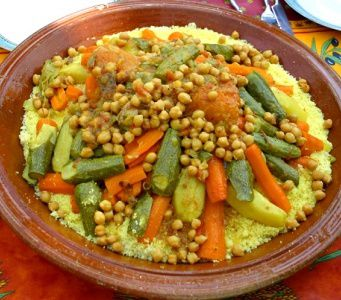

Couscous

Couscous description
Couscous is one of the most popular dishes in morrocco, known by the combination of vegetables, legumes, grains of couscous and meat. It is one of the most complete richest dish and exquisitly delicious.
Couscous's ingredients
- Couscous grains
- 7 types of vegetables or more
- Meat either beef or chicken
- legumes (7mss, foul)
Couscous' steps
- Cook vegetables and meat with oil in barma
- Steam couscous in the kskass
- Reapeat steaming couscous grains and apply water and friction in between steaming sessions
- Serve couscous and water with sauce and serve leat and vegetables